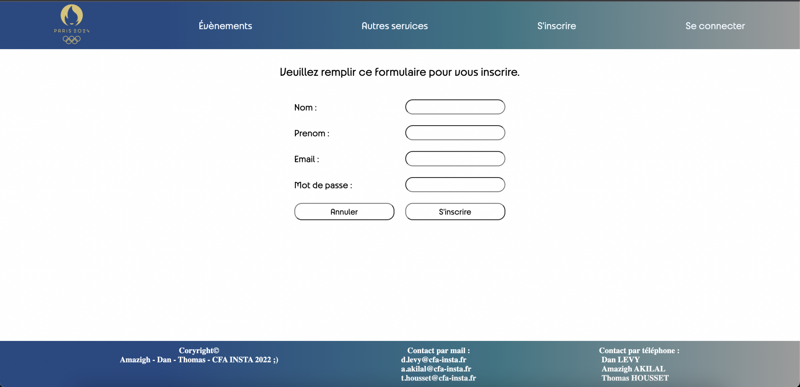

Mes Projets
Projet 1 : Portfolio Wordpress
Partie 1 : Conception d’un site web WordPress
Cahier des charges :
- Un onglet « Accueil » ⇒ présentation du BTS SIO SLAM, liens, photos,
- Un onglet « CV » ⇒ CV en HTML/CSS, CV téléchargeable en version PDF,
- Un onglet « ÉCOLE » ⇒ présentation du CFA INSTA, lien du site, photos,
- Un onglet « Entreprise » ⇒ présentation de l’entreprise, lien du site, photos,
- Un onglet « Cours » ⇒ premier chapitre + série d’exercices + corrections,
- Un onglet « Contact » ⇒ formulaire de contact (nom, prénom, e-mail, sujet)
Concevoir un site web qui sera composé de :
Spécifications
- Utiliser « TRELLO » ⇒ gestion du projet (tâches),
- Utiliser un « diagramme de Gantt » ⇒ gestion du temps,
- Utiliser le Adobe XD pour la maquette et CMS WordPress pour la réalisation,
- Utiliser un Server local (type Wamp), ou hébergement web (type OVH),
- Créer un PowerPoint de présentation.


Partie 2 : Rajout de spécifications dans le cahier des charges
Amélioration de l’onglet Cours:
- Inclusion des traductions des algorithmes en C avec les fichiers exécutables téléchargeables,
- Inclusion des programmes en PHP exécutables directement sur la page.
Ajout de l’onglet Veille Technologique :
- Choisir un thème,
- Établir une veille sur le thème,
- Afficher les articles consultés sur le site et intégrer un Flux RSS.
Ajout de l’onglet Veille Juridique :
- Choisir un thème,
- Établir une veille sur le thème,
- Afficher les articles consultés sur le site et intégrer un Flux RSS.
Partie 3 : virtualisation et Création d'une plateforme technologique
Installation de la plateforme technologique :
- Virtualisation (VM ou VB)
- Installation des VM :
- Linux Serveur Web (Apache2, PHP),
- Linux Serveur SGBD (MySQL, SSH),
- Windows Server (AD, DNS, DHCP),
- Client W10 intégré au domaine du serveur.
- Installer sur le serveur Web le portfolio,
- Installer sur le serveur SGBD la base de donnée de WP.
Réalisation d’une veille sur la Virtualisation :
- Qu’est-ce-que c’est?
- Comment cela fonctionne-t-il ?
- Types de virtualisations
- Ses avantages … etc.
Réalisation d’un tutoriel sur la Virtualisation :
Ajout de l’onglet Veille Technologique :
- Choisir un thème,
- Établir une veille sur le thème,
- Afficher les articles consultés sur le site et intégrer un Flux RSS.
Ajout de l’onglet Veille Juridique :
- Choisir un thème,
- Établir une veille sur le thème,
- Afficher les articles consultés sur le site et intégrer un Flux RSS.
Projet 2 : Création d'un site de gestion de base de données (PHP/MySQL)
Choisir parmis les projets suivants :
- 1- Gestion de la vaccination avec les tables : personnes, centre de vaccination, vaccin, vaccination
- 2 Gestion des pilotes d’Air France : pilote, avion , vol, aéroport
- 3- Gestion de location des véhicules dans un comité d’entreprise : cadre salarié, service véhicule location
- 4- Gestion scolarité CFA : Etudiant, classe, professeur, matière
Tâches et outils à utiliser
- Conception de la maquettes avec Adobe xD
- Architecture du site (Xmind)
- Charte graphique
- Gestion de projet (Trello et gantt)
- Créer un PowerPoint de présentation.
Chaque site doit avoir :
- 1- une connexion / déconnexion avec des rôles(admin, user)
- 2- les actions usuelles sur les tables : ajouter, lister, supprime, modifier (uniquement pour les admins)
- 3- un menu de navigation et pied de page.
Nous avons pris le choix n°3 (gestion scolarité)
Présentation
- Contexte
- Objectifs
- Périmètre du site (public cible, activités)
- Bilan (problèmes rensontrès, compétences acquises)
Projet 3 : Création d'un site e-commerce avec le CMS Prestashop
Choisir parmis les projets suivants :
- Un site e-commerce, une boutique de vente d’objets
- Un site de présentation des services et / ou la vente de services
- Un site d’interventions auprès des clients
- Un site de troc d’objets
- Un site de partage de souvenirs
Spécifications fonctionnelles
- Pour chaque produit mis en vente, définir les caractéristiques réelles avec des photos de bonne qualité.
- Intégrer un paiement via un système hors banque : PayPal ou Strip (créer des comptes professionnels pour le site internet et réaliser de réels paiements).
- Gestion de projet (Trello et gantt).
Chaque site doit intégrer les modules suivants :
- La connexion des utilisateurs
- Un carrousel d’images au milieu de la page
- Le paiement par Paypal (ou autre système)
- La gestion des produits (ou objets ou services) via des images ou vidéos.
- Le classement de produits par catégorie
- Le système de commentaires et de notation
- Un module de statistiques
- Une newsletter
- Un hébergement en ligne via IONOS
- Implémenter des critères de recherche et de sélection des produits
Nous avons pris le choix n°1 (site e-commerce)
Livrables
- Une présentation PPT du projet (conception, gestion de projet et réalisation)
- Contexte
- Charte graphique (couleurs et polices)
- Maquette du site (Adobe XD ou Figma)
- Architecture des pages (Xmind)
- Gestion de projet : Trello et Gantt
- Problèmes rencontrés
- Compétences acquises
- Un site fonctionnel

Projet 4 : Conception et développement d'un site avec le paterne MVC et les technologies HTML-CSS-JS, PHP Orienté Objet et MySQL-PDO
Choisir parmis les projets suivants :
- Un site e-commerce, une boutique de vente d’objets
- Un site de présentation des services et / ou la vente de services
- Un site d’interventions auprès des clients
- Un site de troc d’objets
- Un site de partage de souvenirs
Spécifications fonctionnelles
- Pour chaque produit mis en vente, définir les caractéristiques réelles avec des photos de bonne qualité.
- Intégrer un paiement via un système hors banque : PayPal ou Strip (créer des comptes professionnels pour le site internet et réaliser de réels paiements).
- Gestion de projet (Trello et gantt).
Chaque site doit intégrer les modules suivants :
- La connexion des utilisateurs
- Un carrousel d’images au milieu de la page
- Le paiement par Paypal (ou autre système)
- La gestion des produits (ou objets ou services) via des images ou vidéos.
- Le classement de produits par catégorie
- Le système de commentaires et de notation
- Un module de statistiques
- Une newsletter
- Un hébergement en ligne via IONOS
- Implémenter des critères de recherche et de sélection des produits
Nous avons pris le choix n°1 (site e-commerce)
Livrables
- Une présentation PPT du projet (conception, gestion de projet et réalisation)
- Contexte
- Charte graphique (couleurs et polices)
- Maquette du site (Adobe XD ou Figma)
- Architecture des pages (Xmind)
- Gestion de projet : Trello et Gantt
- Problèmes rencontrés
- Compétences acquises
- Un site fonctionnel
